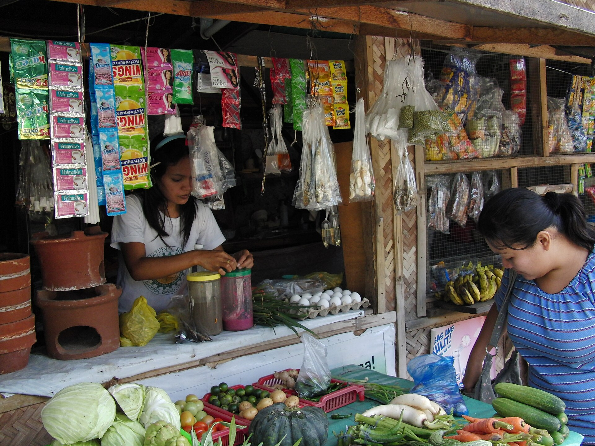
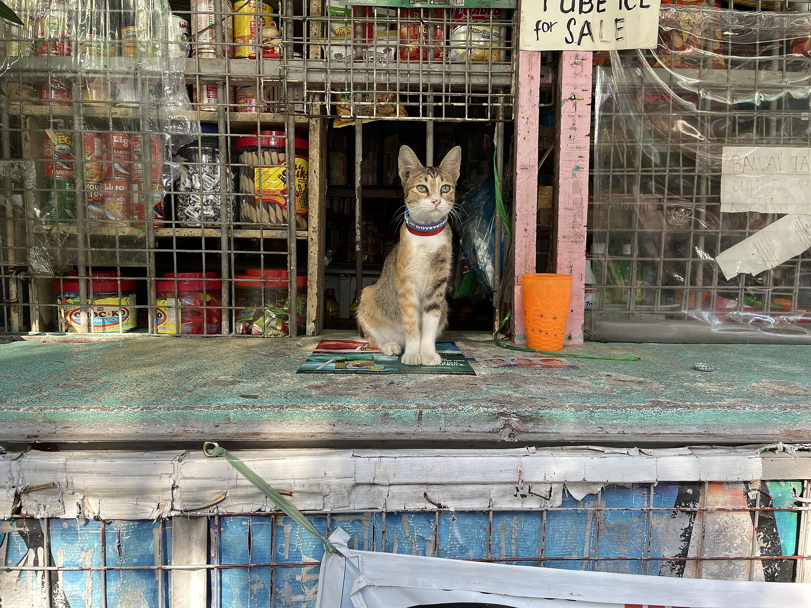
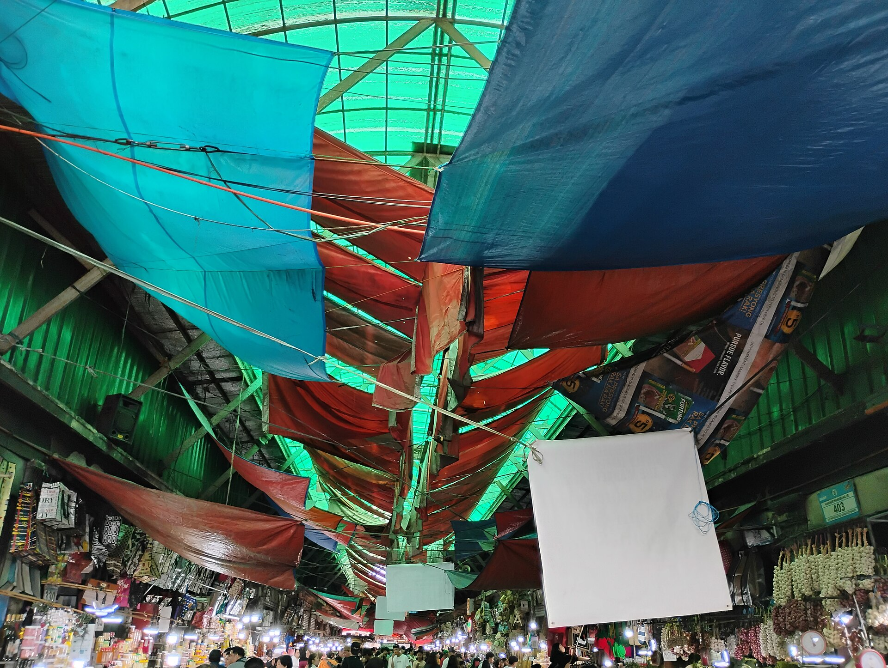

Magsalita habang nagbebenta
“Dalawang pancit canton, trenta otso.” Hindi mo na kailangang bitawan ang pinamimigay mo. Naka-save sa phone kahit walang data.
Para sa sari-sari store sa Baguio. Sabihin mo lang ang nabenta: awtomatikong babawas sa stock, magbibilang ng tubo, at maghahanda ng ulat na tanggap ng BIR at ng lender. Gumagana kahit walang internet.
Kita ngayong araw
₱1,420.00
▲ 14% kaysa kahapon · 38 benta

Naisusulat lang nito ang nangyari na. Hindi nito mababawasan ang stock, hindi ka nito babalaan bago maubos ang mabenta, at hindi ito tatanggapin ng bangko. Tuwing rush hour, ang pagsusulat ang unang nakakalimutan, at doon nasisira ang buong talaan.

“Dalawang pancit canton, trenta otso.” Hindi mo na kailangang bitawan ang pinamimigay mo. Naka-save sa phone kahit walang data.
Bawas agad sa bilang. Bago pa maubos ang mabenta tuwing hapon, may babala ka na, hindi kapag wala nang nabibili.
Buwanan at kwarterly na buod na puwedeng i-export para sa BIR 1701Q o ipakita sa lender bilang patunay ng kita.

Alam mo agad kung magkano ang natitira sa drawer at kung ano ang kailangang bilhin bukas. Hindi na hula sa dulo ng araw.
May tuloy-tuloy na talaan ng benta at tubo na puwedeng basahin ng MFI o bangko kapag nag-aapply ka ng puhunan.
Malinis na buod kada kwarter. Walang gabi-gabing pagbabalanse ng gulong-gulong na notebook bago ang deadline.